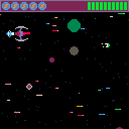
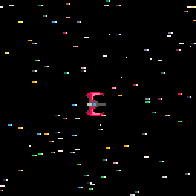

katch33
"to want to be the self one (he) truly is, is the opposite of despair"The Sickness Unto Death - Søren Kierkegaard
Hello there.
My name is Martin and I make videogames, build websites and throw axes.
This website is both an
example of my work as a web developer and the best place to find information about my projects, read updates to
my journal and contact me for fun, work or just to say hi.
If you notice any issues with the site please
get in touch and I will do my best to fix them as soon as possible.
Below you will find links to my
games, my youtube channel and my Mastodon username as well as links to the software I use and the
resources I am using to learn. I will update those lists as I discover more ways to develop and better tools to
work with!
Links
My Work/Contact
Where I'm Learning
blog
Day 65 - Tuesday 05th July
A day late, but a day more skilled at podcast editing. I've taken a friend up on an offer to help with a podcast that he edits and in pursuit of that goal I have been learning my way around the free audio software Audacity and the workflow invovled. It's been challening but really interesting. Hopefully at the start of their next season there will be plenty of work to keep me engaged during the week. I can see myself in a position of essentially being fully employed in this manner by the end of the year which would be fantastic.
Today I started work on another episode, spending most of the afternoon trimming and clipping audio files and procuring AI transcriptions. I won't be posting any details of my work here but I will talk about the tools I am using and the skills I'm learning.
In August I will be in Los Angeles to visit some friends and attend the Flanel Nation festival. I've never been to LA before so my main task is to find as many interesting game and nerd related activities as I can before we go. I also need to make sure I find some decent restaurants of which I'm sure there are many. If anyone has any suggestions toot me baby!
I am now 3 episodes behind the SHMUP tutorial. Mostly due to the deadlines involved in that podcast practice but also because I spent the weekend at a motorcycle road race watching dozens of bikes race around country lanes. It was a lot of fun aside from the lingering sunburn that plagues my hairline! I am still enjoying playing with my pixel toy a lot though, I boot it up every now and then and shoot some aliens to keep my appetite whetted.
Also Final Fantasy XII rules. You were right, wherever you are!
Day 61 - Friday 1st July
Only time for a quick update today. The morning has been spent cleaning my apartment so I feel like a human adult and not a goblin in a cave! I will be working at the Axe Club all day so not much time to code, and then over the weekend I will be attending the Skerries 100 motorcycle race. I will aim to get my next update done by Sunday evening.
I alos tidied up yesterdays update and added some context, a more appropriate gif and I improved the spacing on my parapgraphs and my images. I do want to leave you with one more thing though, I have started artwork on a character for a possible platformer game. It would feature spells and magic and pixel art and thoughtful exploration. While the idea is in the early stages I'm getting excited about it. The most important thing is to finishe the projects I am currently working on though.
To that end I have started a proper ideas journal for games. Everytime I think of something cool I scribble it down and that should allow me to feel like I haven't forgotten any good concepts while also letting me focus oin what I'm doing now and giving me a source to draw from in future for other projects.
Until next time...
Day 60 - Thursday 30th June
SHMUP!
What is it: A tutorial by Lazy Devs to build an arcade style classic SHMUP game. SCrolling stars, flying ships and pew pew pew's!
On my path to becoming a game dev I need to build projects and for teaching and cool ideas I haven't found any better thatn the Lazy Devs youtube channel. There are links up above and I highly suggest checking them out if you;ve ever wanted to make your own game. This series started by beginning with simple concepts. How to draw your ship to the screen, how to move your player, how to draw stars. By explaining the ideas and letting you get your hands dirty as well with the Doggie Zone these videos reinforce core concepts like loops, tables and using timers for animation. FOr my own part I decided I would set the game in a side scrolling universe rather than a vertically scrolling one. In my mind when I think of a SHMUP game I think of titles like the R-Type games.
The Big Big Bang!
The first thing ever universe needs is stars! It wouldn't be much of a space adventure without a cosmos to whizz by in the background. In order to achieve this I created 3 functions. One to add stars to am empty table, one to loop through the table and update the positions of each star and finally a draw function to draw all of these stars to the screen. There is quite a lot of code which is very similar so I'm going to just pull out one section (which functions the same way for each different background layer). First up lets see the code for adding stars to the universe:
--stars
for i=1,star_num do
add(stars,{
x=rnd(128)+1,
y=rnd(128)+btm_edge,
spd=rnd(5)+1,
scol=rnd{6,7},
tcol=6,--rnd{6,7,12,13,14},
len=rnd(7)+3
})
end
The text with two dashes in front (--hello world) is commented out. It means that in my code these lines are ignored.They are often used for explaining a piece of code or making a note of something you need to change or update in the future.
This small section of code is responsible for adding all of the stars to our background. I have used the code which adds the most stars as an example to keep things simple but for planets, larger stars, smaller stars it all works the same way. First we create a loop, which we want to run a given number of times. In our case that number is an argument accepted by the add_stars() function. This means we can tell it how many stars to generate. The next step is to give each star different values for their position, speed and colour. These are the X,Y,SPD and SCOL attributes. In my case the stars will be randomly set to either colour 6 or 7 which is grey and white. Finally these particular stars also have a TCOL and LEN attribute. I plan to use these later on to add a hyperspace style stretched star effect so trail colour (TCOL) and length(LEN) will be very relevant.
The next thing we will take a look at is updating our stars. Once again we will only look at the section that updates the stars we added in the code above.)
for s in all(stars) do s.x-=s.spd if s.x<=0 then s.x=138 s.y=rnd(128)+btm_edge s.len=rnd(10)+1 end end
Notice how this code starts with another loop? That's because everytime we want to update our stars we need to give instructions to look at our table of stars (conveniently called 'stars') and for every entry in that table we want to update the X values. We do this by subtracting the stars speed from it's X position. Given that our X coordinates start at 0 on the left hand side of the screen and go up to 128 on the right hand side this will move the star from right to left by decreasing the value for X. We don't want it to go too far though! Once the star is off screen and no longer visible to the player we warp it all the way back to the right hand side of the screen and send it whizzing by again the same way. If you look at the code you can see we use an IF statement to check the X position. When it's less than 0 we reset it's X position to be 10 pixels further than the right hand side and to choose a random Y position (vertical position) for their next trip past the camera.
As you can see I have used a variable called BTM_EDGE to limit how high up the stars are generated but I will likely remove this while refactoring my code. It doesn't save us any real overhead and is more complicated than just saying "go anywhere on the Y axis"! AFter we've done our updates we still need to actually draw the stars to the screen. Again we will look at only the section relating to the stars we just updated. Guess how this code begins? If you guessed "with a loop" then congratulations. You were right.
for s in all(stars) do
pset(s.x,s.y,s.scol)
--line(s.x-1,s.y,s.x-s.len,s.y,s.tcol)
end
Drawing stars to the sky!
Once again our loops sets us on the right path. It loops through the stars table and for every entry it calls the PSET function. This function needs three arguments to work. It needs an X, a Y and a colour. We added those back at the beginning and we updated the X position during the previous section so this final bit simply draws a single pixel at the X and Y position of a given star and then colours it in. Simple as that.
You can see there is another piece of code currently commented out. This piece of code uses the LINE function which (you guesssed it) draws a line! In my code it will be used for the tails behind the stars although for the moment I have it removed for testing.
To illustrate the above code take a look at the gif below. Remember, none of the code above calls any artwork, the stars themselves are just lines of code. Pretty cool I think.

Day 53 - Friday 23rd June
As I have become painfully aware over the last 10 days it takes a lot of work, energy and focus to remain in the habit of practicing everyday. While I did have some personal engagements there is no excuse for how lazy I have been with updating my site and with practicing my programming. Work has certainly come along on my SHMUP game but I have let everything else fall by the wayside. To remedy this I am setting myself a challenge. My aim is to change one thing about this site every week, along with writing a daily bit of Pico 8 code using a function I don't have experience with.
It hasn't been all lethargy though. I did enter a short 4 hour game jam organised by Celesmeh, one of the other users on the Lazy Devs discord server. The entry can be found here! It's mostly unfinished but was an attempt to use what I had learnt about particle systems to create a swarm of bees that you fly around to collect pollen. As you gather more pollen the swamr was supposed to grow larger and get faster/better t collecting pollen. It has left a lasting desire to create a game where you play as a swarm of something or other!
I will also have a new game uploaded to my itch page this weekend. I have been able to get a copy of the first released game I ever worked on. The wonderful Cow-spiracy! It's currently downloadable from RetroNeo Games, a short lived games company set up by my good friend Kevin.
With all those exciting things out of the way I will finally mention that I have been playing the Final Fantasy 7 REmake on Steam and I love it. Excellent visuals, exciting fast gameplay and some of the best music I've ever heard. Tomorrow morning I will be updating the site with a larger post on my changes to SHMUP and the systems we have built for it!
Day 43 - Monday 13th June
After an exhausting weekend I am spending a whole day working at the computer (finally!). There will be 2 updates to the site today. The first is this little post to lay out what my aims are, and the second will be in about 7 hours when I update the journal with some progress and hopefully examples. As for my aims: To complete the next episode of SHMUP, to complete one eipode of Porklike and to chanmge some part of my website!
Off I go...
Day 42 - Sunday 12th Juky
My excuse is much the same as last time. I will be working again for the latter half of Sunday and then free all day Monday, though in the run up to the wedding I must still seek out an appropriate shirt and tie combination. This week will be busy but friends and family abound so I'm holding myself to a slight less strict schedule for updating the site.
I have also started a new pico 8 project to generate a large map of stars with planets dotted throughout. I'm not sure what the plan is long term but I think I'd like to generate some kind of chilled out No Mans Sky-esque scroller space boredom time consumer Like the almighty ascii-sector, long may it stand.
Day 38 - Wednesday 8th June
As I'm sure the more astute among you have noticed I didn't update the site for a few days. I was extremely busy with the new job over the weekend and needed a break away from the constant immersion I've been using to learn coding. Luckily that means that today I was able to come back with a vengeance and push right on through adding collision, some visual effects and points into my SHMUP game. The gif below demonstrates all these new additions. I will also share some code snippets as well.

In order to get all of that working my first challenge was to figure out how I could print text with an outline. I used what I could remember from the Porklike tutorial and wrote a small self contained function I can drop into any project for it. It felt good to build something that worked without looking at any reference materials! The code is below:
function borderprint(txt,x,y,c1,c2)
local dirx={-1,1,0,0,-1,1,-1,1}
local diry={0,0,-1,1,-1,-1,1,1}
for i=1,#dirx do
print(txt,x+dirx[i],y+diry[i],c2)
print(txt,x,y,c1)
end
end
This code takes some text (TXT), an X and Y position and an internal and external colour (C1 and C2 respectively). It uses two tables of values to loop through and print the background colour at all 8 offsets of X and Y. Once this is done it finally prints the original text in the middle in the fill colour. Simple but effective.
I am running 3 sessions tomorrow at axe-club. My photographs and videos are finally off my phone and onto my PC so hopefully I can sort them soon and upload some nice little trick shot gifs!
Day 33 - Friday 3rd June
**written morning of Saturday the 4th**
Another late update! Friiday was spent running Axe Club by myself. I handled 3 groups, two stag parties (one of which was a pizza event) and one open session full of a mix of people. All three went really well with some customers asking for my name so they could mention me in their reviews. I will be back in on Sunday to split the day with another instructor.
On the coding fron there are now 2 episodes of SHMUP for me to catch up on. I've realised how far my web dev has fallen behind so the new plan moving forward is to use 3 days a week for web coding, 2 for gamedev and to assume I will be working over the weekend. Immersion is particularly important for me to help with learning so I need to become more involved with the Free Code Camp discord I think. I also need to start building some sample projects outside of the lessons I am following. Work that I can use to explore the edges of what I already know and figure out what to focus on.
That's all for this update. I will make sure to update again tonight (Sat) with any progress I make!
Day 32 - Thursday 2nd June
Today was filled with meeting family for a lovely lunch, strolling the promenade afterwards and then video chatting with family overseas! I just about found time for some dinner eating, a bit of Hitman 3 and 30 minutes of Elden Ring before the energy dropped and I crashed back to the couch for some snooxing. Tomorrow I will be leading three sessions at Axe Club. A pizza party at 2pm, and then 2 open sessions afterwards. It seems like it should be straightforward enough. The morning party will be a stag of 10 people so with any luck they will be in the mood for throwing axes, eating pizza and drinking beer. Open sessions are great as they only last the hour and when they are full up they basically run themselves.
In my SHMUP game I added a basic state machine to handle a start screen and a game over screen. Gif's incoming tomorrow morning. Exciting stuff. Porklike is progressing much more slowly. I'm still trying to find the right balance between coding, axe throwing and energy -_-
The Meshuggah concert last night was incredibe. Excellent support from Zeal and Ardor and a nice singsong in between covering Pantera's Walk, SOAD's Toxicity and Careless Whisper. Photo's incoming tomorrow morning also!
Day 31 - Wednesday 1st June
Only time for the briefest of pre midnight updates! I've broken the formatting on the right hand side of the page! Maybe not on larger screens but certainly on mobile devices (oh no). I'll deal with that in the morning but for now suffice to say the Meshuggah gig was fantastic. I picked up a tour t-shirt and a limited run (1000) copy of their new album immutable printed on clear vinyl. And so now, to bed!
Day 30 - Tuesday 31st May
**update written Wednesday 1st June**
LEAGUE NIGHT! That was an excellent 2 hours of axe throwing. I practiced my throwing, met some fellow instructors and got to take aprt ina competition against everyone. Throwing in an environment where I was able to focus on my technique and not worry about delivering a public talk to a group of strangers. AFter the contest we took a break and then engaged in a Blood Eagle. For this you throw 5 darts at a board and once done you run to the axe range. There are a total of siz targets and you have to throw an axe at each one in sequence, and keep going until they are all in the wood. Afterwards they add up your points and see how well you did. You are timed and have a maximum of 60 seconds to get it all done and it is a lot of fun.
On the coding front I didn't get much of anything done. Predominantly troubleshooting my desktop as it was experiencing some funky behaviours. Driver updates and some simple cleanup seemed to fix everything thankfully.
In relation to music I was very lucky with the Meshuggah gig. A friend of mine found someone on twitter selling a ticket and I managed to get it! I will be meeting a friend this evening and then enjoying a few hours of one of the best bands out there. This week has been busy and a mix of news. I'm really lucky to be in the situation I'm in and hopefully the hours at axe club continue to grow. Ultimately it would be great to grow that into a permanent role and work a mix of sessions that still free me up during the week to keep coding.
My energy leveles are definitely sufferening with all the new activity but that just means I need to do some dietary adjustment and get myself into some better sleep habits again. I'm feeling good about everything for the most part. Long may it last!
Day 29 - Monday 30th May
A slow Monday as I dealt with more lessons in the Free Code Camp tutorial. I didn't progress any further in game dev as I wanted to catch up a bit more on my web stuff. Ultimately I think that web development might be more likely to pay the bills sooner than making games but we shall see. For the moment throwing axes is paying the bills!
I've really settled into the role a bit more. I'm going to be opening up and running three sessions this Friday coming, but tomorrow night I get to go to League Night! Some staff will be there, there's no session it's just games and competitive throwing. I might order a pizza, might take a bus and drink a beer, who knows but I'm excited for my first Axe Throwing League Night.
Tomorrow morning I will complete the Porklike episode I was in the middle of, after that I will do the currently availble SHMUP episode and after lunch I will do some web dev. I've decided to start designing a new website for axe club as a personal project. If it turns out well I may show it to them but ultimately I'd like to design something that gets across the culture and myth of axe throwing. It's cool, it's fun and I like doing it. It's even more fun when the customers enjoy it but if I get to design a great website for a hobby of mine then why the hell mot.
In the background as I write this update there are youtube videos playing and I'm half in conversation so I'm going to finish the update here and sign off. (Quick update: no reply from Acer on the lid repairs, I will probably submit a new request through their customer care page again. Or I might try to get a higher resolution screen and a new lid and franken-jam them together.....)
Day 28 - Sunday 29th May
Woe is me
woe is me
ill tidings befall
my technology!
It has finally happened. After several years of loyal service my laptop has begun to show the signs of wear and tear I dread the most. At the point where then hinges are connected cracks have begun to show in the plastic on the left around the bezel. On the right they appear when opening or closing, sure signs that the plastic is soon to give. In repsonse I have left the laptop lid open permanently so that the machine us usable but of course it renders it less mobile than before.
I have contacted Acer support about the possibility of a replacement hinge/screen lid but as yet have had no reply. On top of all this a dead pixel has appeared on the screen. It's piercing cyan gaze leers at me from the safety of it's pixelated realm, mocking, teasing, as if to say "I am here, gaze upon me and know thy efforts amount to naught. Entropy shall consume all!"
On the other hand I had a great day in Axe Club! We had two open sessions folowed by a pizza party and everyone seemed to have a great time. My friend Des came to the second open session and really seemed to enjoy it. I hope I've encouraged him to take it up as a hobby and join me on Tuesday for the league night. He stuck around after the session and threw a few more axes until close to the beginning of the final group for the day. It was great to see him, we don't get to spend too much time together as of late.
Tomorrow morning web dev returns. I will provide some meaningful updates on my progress but I'm already picturing a new navigation bar at the top of the page, permanently locked in place while you scroll. My main thing is that I avoid creating a site that looks like it was pulled out of bootstrap. While there's nothing wrong with the concept of frameworks I am not a fan of visiting 20 different sites and realising they all look almost identical. Creating a website is presenting your thoughts and design to people, and to that end they should reflect some aspect of bothe their purpose and their designers personality. So far mine says "I can write basic HTML and CSS" which seems apt ;)
Maybe my new sign off should be: git commit -m 'going to bed'
Is that super lame? Probably.
Day 27 - Saturday 28th May
What a day! I took charge for most of the entire day at Axe Club leading several groups from start to finish. It was a good day, but very long, From 10am until 9.20 I was roaring, shouting and throwing axes. Sinéad was really happy with all of the sessions I led which was a nice feeling. Aside from the update I wrote earlier this morning, I didn't do any typing at all. My soundtrack today was the Axe Club spotify playslists and the sound of metal hitting wood. After all that I dashed home to be met with a lovely hotdog and fried from one of our regular local restaurants and now I'm ready to fall into bed.
Tomorrow I'll be working until about 7pm but then during the week things will go back to being quiet. The plan is to work through the next episode of SHMUP, complete the responsive html segments and make it through at least 3 episodes of Porklike.
zZZzZzz....
Day 26 - Friday 27th May
**written on Saturday the 28th**
This update also comes a day late! I had a small accident last night and stabbed myself square in the palm of the hand. It wasn't a deep cut but it was painful and made it hard to type so I decided to push the update until today.
There's not much news, I had to head to my hometown and sign some documents, and when I returned home I had some shopping to take care of. This only left me with about 3 hours to get any coding time in. I pushed through a few more Free Code Camp lessons and spoke to a few people on the Lazy Devs Discord server about their game progression. Aside from that it was a slow day.
As I am writing this on Saturday morning I will be busy all day with work at Axe Club. The day opens with a 2 hour pizza party starting at 10.30 and I will be working until 8.30pm.
I've set a reminder on my phone to update the site later tonight. If I manage to get any good photos or clips of myself throwing axes I might post one later on!
Until then!
Day 25 - Thursday 26th May
**Note: This update was written and posted on Friday the 27th of May**
Due to some unforeseen circumstances I was unable to post this update yesterday but today I will post a brief overview of what I worked on!
Much like Wednesday I made slow progress. I did put some time into cleaning code and adjusting specifics for the stars etc but after lunch I got in touch with my friend again and we decided to play some more Kingdom 2 Crowns together. This was after we had a brief discussion about possible work on a podcast he edits. It sounded interesting and I’m hoping there might be some work available for me to help with. Between that and axe throwing I would be free to pursue coding and game dev while also being able to earn enough money to make a meaningful increase in my savings.
Ultimately Thursday's work was nothing much more than a few tweaks to existing code and settings and some lessons in Free Code Camp's updated HTML curriculum. The projects for the initial certification are slightly reordered and use a new tool that runs entirely in the browser and on their website so I’ve started from scratch just to cover the fundamentals again.
Day 24 - Wednesday 25th May
An exhausting and slow day altogether. I made a second version of my SHMUP game where the ship is facing towards the top of the screen and the stars and effects fly downwards. It wasn't a huge change from the side scrolling version but I wanted to push ahead with both versions. Outside of that I continued with the revised Free Code Camp curriculum and completed the CSS lessons about drawing a series of coloured markers on the page wth nothing but CSS.
After lunch I spent some time playing Kingdom: 2 Crowns online with a friend who is currently on holiday in India. We had a good long chat and the game was great. Simple, stlyish and interesting. The only criticism I had was that some of the mechanics are particularly obscure and without his prior experience there would likely have ben a few things I wouldn't have understood. At least not without browsing external wikis!
I also puchased tickets to the a local street motorcycle race next week. I'm heading with my partner and her cousin next week and really looking forward to it. I also wanted to get tickets for a Meshuggah concert net week but unfortunately they were sold out today when I finally had monet to try and get them. I'm a bit disappointed but also happy I didn't give Ticketmaster any money in the end. I may still head to the venue and try to walk in a back door with a high viz jacket or some other sneaky setup.
Something I wasn't expecting to find with my journey to become a professional coder was that my eyes are definitely more tired if I work in the vening. I've been using the night-light feature in Windows 10 as well as a low brightness but I think I might get an eye test done in case my eyesight would benefit from glasses. Given their exhausted state I will drag myself to bed now! Till tomorrow.
Day 23 - Tuesday 24th May
I met a friend this morning for breakfast and a walk in the city. We sat on the edge of a cricket field and talked about everything together. I ate hash browns and he ate a breakfast roll. We both drank black coffe and enjoyed the sunshine. After that I walked through town and headed to the quays of the river, where I took a bus up to the food co-op and did some shopping. Even though it's taken only a few words to describe my morning and afternoon I didn't actually arrive home until almost one o'clock. This meant I had time to prepare lunch and eat before starting back to some coding work on my SHMUP at about two o'clock.
I attempted to develop a system for animating a transition to hyperspeed. The idea was that on pressing the button all of the stars would stretch out to long streaks and all the speeds for the background objects would increase, but I really struggled to find a way to accelerate and then decelerate all of them smoothly. I didn't find it hard to accelerate the star animation speed but I did find it hard to have everything slow down again rather than simply coming to a stop. One of the discord users, Skull_Dragger, created a shared playlist on youtube for us to add music to after I opened a side thread about what music people listen to while coding.
While I didn't accomplish that goal I did spend a few hours working on shortening some code and generally experimenting with how the star generation and rendering for shields will work.
Musically it was mostly Prince and discovering a new ska band called The Garages. With the update out of the way I am off to bed so I'm going to commit, push and hit bed 'cuz I'm bushed!
Day 22 - Monday 23rd May
"A long day and a short break" I spent far too long today overlooking small mistakes in my code that really made me feel I was losing my mind. I caught up on the latest episode of the SHMUP tutorial and took great inspiration from the other members of the Lazy Devs Academy discord server. I have put up a gif of my current progress, showing my streamlined star generation and lovely little animated blasts of laser energy. I also added some simple physics to allow a bit of momentum in the ship movement, making it feel more weighty and I managed to start generating enemies and sending one across the screen as a test but I'm yet to properly implement any collision. Once I do, combat will follow close on it's heels!
I had some further contact from the Dublin Axe CLub and spoke to one of the owners, Matt. He sent me on the details required to sign up for their booking tool and the other logins I'll require. The people involved in the place all seem very sound and friendly so far. I'm looking forward to my first league night. FOr the coming weekend I will be in all day Saturday and running most of the Sunday sessions myself. For whatever reason I find it a bit nerver wracking, I'm guessing mostly because I don't feel that my own axe throwing skill is quite up to standard yet. It feels more authoritative to teach throwing when all your axes bury themselves firmly in the target!
June 1st Meshuggah will be playing in The Olympia so I'm going to try and pick up a ticket on Wednesday before they're sold out. I've seen them a few times and they've been fantastic everytime. THey've been one of my favourite bands ever since I was first introduced to them by my cousin. They totally changed how I felt about music and helped open my mind to a realm of possibility there that I had never considered.
Speaking of music it's been a day full of Jamiroquai, Strapping Young Lad and Prince. I've been hungry for music that matches the enthusiasm I'm feeling for all this focus I've introduced into my life!
Tomorrow morning I meet a friend for breakfast and then do some grovery shopping. AFter that it's home and I will flip a coin to seeif I focus on game development or web development. Tune in tomorrow to find out what happens!

Day 21 - Saturday 22nd May
Today was exciting. I led several axe throwing sessions for the first time. It's a huge amount of fun, but it's tiring work. Lot's of group direction, using a loud voice and remaining vigilant while people fling axes about.
Before I left today I spent a couple of hours trying to build a more compact starfiled generator in Pico 8. My goal is to try and reduce the number of arguments the function takes while allowing for a wide range of scrolling stars and bodies etc.
My plan for the week ahead is to spend tomorrow morning working on my star generation, and I might attempt adding a table to store enemies, and some actual enemies to put in it. I drew a few simple sprites so if I can get some kind of collision detection using Pico 8's flag system I should be able to have weapons that hit enemies!
I also want to make sure I keep pace in Porklike so I will probably split tomorrow between both games. SHMUP in the morning, ROGUE in the afteroon.
As a side note I'm working on a small parallel project to create stars that will remain static unless I fly around. I think the right way to do this is to generate a large number of stars in the init function with defined x and y positions in a much larger area than the screen space of 128x128. Then when I modify the player position I can apply some effects to the stars on screen and keep the ship centered in the camera view while I "move". I'll try to post in more detail about what I do and how I do it.
Day 20 - Saturday 21st May
Another short update today. I spent 11.15am-8.17pm at Dublin Axe CLub helping to run axe throwing sessions and learning how to interact with a large group. Tomorrow I will be leading a session myself and after I do my first aid I'll be fully trained. I haven't had a chance to do any coding today. I'm hoping to have a chance tomorrow after I'm back from work but if not the next set of coding related activities are to complete some more Free Code Camp lessons.certifications and to complete the next episode of the SHMUP tutorial over on the Lazy Devs Youtube Channel.
I can barely keep my eyes open so if I can tomorrow I'll get a photo of myself throwing an axe or some such. I'll also see what kind of cool gifs I can capture by changing parameters in all my particle and star generation functions.
Day 19 - Friday 20th May
I sit here and type this latest entry on my new site. Laid out to be essentially the same on mobile and desktop. A much flatter look in terms of colour (I'm sure the palette will change multiple times over the next while) but also a much easier to update format behind the scenes. I'm particularly happy with how it looks on my phone but if anyone has any problems get in touch and let me know.
THe last thing to do once I finish this post is to center all the images on the page and the git push. I'm really happy with how it looks and spent all day working on this move and nothing else so I am off to play some videogames. Goodnight!
Day 18 - Thursday 19th May
So I managed to break the image in the post below just now which is a bit odd. I didn't adjust any paths or anything so not sure what's going on there. Anyway for the moment I will forget about it and push ahead to say I have a few gifs from my updated Space Fighter SHMUP tutorial game. I've been having a huge amount of fun adding to what we built in the tutorial. I've used tables to create objects that get added into other tables. An example of what this could look like in Pico 8 is:
function add_stars(num)
for i=1,num do
add(stars,s={
x=64,
y=64,
spd=1
})
end
end
The code above is a function that takes one argument (in our case num for number of stars) and adds to our table
(named stars) an entry which is itself a table listing info about the star such as it's x value, it's y value
and
it's speed. Further down in the games update function you can take the speed (spd) value away from the stars x
location st.x-=st.sThis happens until the star disappears off the left hand side of the screen. At this point we reset it's location to the far right side of the screen and it moves past the screen once more. I took this a few steps on and created the following function:
function add_stars(dist,distbrite,dst,body,star)This lovely function takes 5 arguments. Each one generates the equivalent number of that background layer. The first argument, DIST controls the furthest slow moving distant dark stars. A setting over 100 works surprisingly well. In fact in the first gif under this post I have DIST set to 500. So far I don't see any performance impact turning that up to 10,000. At about 14,000 background stars Pico 8 starts to ru out of memory almost immediately so 500 seems reasonable for now.
After that there are a handful of other layers. DISTBRITE is a small layer of 20 stars right now. It generates bright single pixel objects meant to represent planets/stations etc. DST is for dust which is what I've called the dark circles of varying sizes that come in blue and dim red. THe next layer is a wider spread of larger circles. These have 3 colors which don't overlap the previous layer. Finally there are the nearest stars. THhe ones that have the different coloured long tails. There are 25 of these to give the scene a lot of animation. I want to add a slight wobble to the ship to give it the impression of hovering in space, rather than being fixed still when the player isn't providing input. I'll talk about specifics a bit more in another post someday, but for now I'm going to remind myself that tomorrow the new website should be up and running. And that is all.

Day 17- Wednesday 18th May
I made a lot of progress on both Porklike and on the new SHMUP! tutorial tday. IT felt good to get in two game
days in a row. I've included just one updated gif of my work as they essentially all show the same things. In
order of noticeable impact the first thing is that I've massively increased the number of background stars and
images. This creates a huge amount more action in the scene from the start althought I feel like I want to slow
down the darker distant objects a litte bit more to create a greater sense of depth in the parallax, but I'm
incredibly haooy with how this currently looks.
The ship in the scene was clearly influenced by Spike's "Swordfish" from Cowboy Bebop. I was inspired by another
user on the Lazy DEvs Discord to make my background ore dynamic and it was great fun figuring out how to use what
I already know to solve the problems I was facing. I'm going to try and keep pace with the tutorial from now on as
I don't know enough yet to venture out further and create deeper systems like collision, power-ups etc but I'm
really looking forward to it.
Quiet day overall, after everything was said and done I played some L4D2 witha friend and just relaxed. TOok it
easy. It felt great to know my brain was holding onto some of the sstuff I'm learning. Repetition and doing bits
of it everyday is what's making all this time count for more and more. I'm so happy I started this journal. It's
given me a focused way to stay on target for doing some of this stuff everyday. Even maintaining my site and
updating this blog requires me to use HTML and CSS, VS COdium and git with Github to to. THat's practice in and of
itself. I'm really excited to change the blog over to the new layout. All going well it should happen on Friday.
TOmorrow I have some family business to attend to, so I probably won't get back to this until later on in the
evening. I will write something whether I code or not. {/end.Journal}

Day 16- Tuesday 17th May
I am officially beginning my training as an axe-throwing instructor this Saturday with Axe Club Dublin. I'll be
starting out shadowing training sessions, reading up on the instructor book that I;ve been sent and getting ready
to instruct groups of people how to throw axes. ANd I will be paid for it. I'm delighted to have a shot at doing
something else for a change, something outside the norm of what I've done before. I enjoyed throwing axes the
other day so I'm going to get to practiec a skill that seems awfully fun and competitive.
Today was a game-dev day so I knuckled down and tried to troubleshoot Porklike. AFter posting to the Lazy Devs
discord and getting a reply from none other than @Krystman himself *swoon* I was back on track. It turns out I had
identified a bug ahead of time and he hadn't fixed it in the series yet. Once he filled me in I just worked ahead
and did the next episodes improving the fog. Now there is fog of war based on range and line of sight. It's
amazing seeing something like that implemented from scratch. THat's something I love about Pico8, we have to build
the functions ourselvs, the systems that we will use. I feel lie there is value in learning that approach.
Other than that it's all been a pretty quiet day. O feel like I made good progress, I started the Shmup series
right after I completed the fog episode of Porklike so I have some gifs below of what I accomplished today. All in
all I'm pretty happy.
Today was a good day.


Day 15- Monday 16th May
Having spent the morning settling into VS Codium properly on my dekstop I found a lovely little plugin that makes
the IDE transparent to varying degrees. It make a nice change from a single colour background and is easy enough
to disable.
Two main things happened today in relation to my coding. THe first is that I managed to find a design on mobile
that I'm happy with, that scales all the way down to an iPhone5 screen which seems pretty small. Hopefully that
means that anyone visiting this site is able to read all of my info. The second major thing that happened is that
I went back to the Free Code Camp curriculum to find that they had revamped the whole module. It's the same
material but covered in a different way, and it seems like the projects are integrated into the learning more that
being listed at the end like a series of mini-bosses. What all this means is that I decided nothing beats learning
your fundamentals. I restarted the whole course from there. I figure running through everything again won't hurt
and might help embed some basic concepts a dit deeper into my big stupid head. At the same time I am working on my
redesign for this site. It will be plainer than this site I think. A similar straight down layout on mobile but a
bit more impactful on desktop. I don't imagine I will move everything over until the weekend. I seem the be in the
running for casual axe instructor so hopefully that will start to pay real actual money.
Tomorrow I return to Porklike! Things in that area have stalled a bit. I'm having an issue with the animations. If
I spawn one enemy and it catches sight of me it seems to draw the enemy one square behind where it actually is. It
also doesn't animate the sliding into the next cell. It doesn't happen with multiple enemies on screen. I will
need to pull apart the functions for moevement and animation to find out what's happening. Fortunately I saw a
short video on how to use Pico8 with VS Cod(ium)e so it should be a cinch to compare my code and Krystman's
original code for difference's (read mistakes).
Once again I had French station TSF Jazz playing in my headphones. For lunch it was raspberries in porridge withs
sugar and cacoa. We didn't use any oat milk today and I could tell the difference. It was much less sweet. It
surprised me how much of a difference the water only porridge made but it was still delicious. I got a wonderful
loaf of thick heavy granary loaf bread and for dinner I fried halloumi and mushrooms and served them with sliced
baby tomatoes and toasted bread. It was great.
If everything goes according to plan there will be a screenshot below this post of my new Codium setup on my
laptop! If not, the there won't be...

Day 14- Sunday 15th May
*THIS ENTRY HAS BEEN WRITTEN ON MONDAY MORNING*
So. I thought I had properly set up Codium to work with my github account but it seems I was only pushing my
changes to the local repo on my laptop. I am sitting today at my desktop attempting to sort out that link so that
I can continue to work as before. One of the main reason for downloading codium was the 50 hour limit on Gitpod. I
could double it for a few euo a month but why bother when I have access to my own hardware and a tool like Codium?
(The answer to that rhetorical question may well be 'because everything worked in the cloud' but I don't think
that's a good enough reason in and of itself!).
I will add more to this entry later today presuming I can get this push function to work. The Github extension in
Codium seems unhappy with my Personal Access Token so this might take longer that I thought! Off to youtube I go,
hunting for hints and info. Until later.
Day 13- Saturday 14th May
Today I woke up, walked my partner to rhe bus and then came home and played with grid layouts in codepen. I tested
different layouts for different devices and tried to get a sense for how I wanted it to portray information on
mobile
compared to desktop. The part I'm least sure of is the blog. Where is it best placed. If the page is going to just
be
a long single entry that gets longer and longer, then surely the bottom of the page makes the most sense. But if I
want
the page to be a single screen size and the content to be scrollaable within that then maybe taking up a few
columns on
the left makes the most sense.
In other news I shadowed my first session of axe-throwing. It was a lot of fun, and I got to watch Sinead lead a
group.
They had a good time and enjoyed it, and I got to practice with the axes before and after the session. She's going
to speak
to the owners and let me know. She invited me down to hang out on Tuesday night between 6 and 8pm which is when
the staff hang out
together. There would also be some work involved in handling e-mails and using their customer booking system and
the staff shift
assignment.
I think that I got on well, with any luck I will somehow fall into a well paid coding job but before then it would
be great to do
something different and this certainly is that.
There wasn't much else happening today. I ate scrambled eggs and a stir fry, had a coffee. FOr dinner tomorrow I
think I'll probably make bolognese. I wonder if I'll regret writing such a casual journal when this site is more
advanced and people are looking at it as my work. How far back will they go? This far? Further? Truly, some things
were not meant to be known by mortals.
Day 12- Friday 13th May
For the frst part of the day I went through a 28 minute tutorial by CodeLabs on different levels of CSS layout. At first I followed along and after that I spent
the rest of the afternoon trying to use what was covered to create a new layout for this site. While I'm getting
better with the actual grid I'm still all over the place design wise. I need to upload a few gifs of my work I
think, and try to provide more examples of other things I've done. I didn't do any game dev for the nth
day in a row.
I managed to create a simple layout and figured out how to place my lists of links side by side inside a grid item
by turning it into another grid. I also managed to embed my blog as a scrollable window although after looking at
it and trying it I think I want to change a few things.
I spoke with Sinead from Dublin Axe Club about the possibility of training as a "casual instructor" and maybe
doing some social media/email stuff for them. I have a shadow session learning how to instruct a group at 2pm
tomorrow. It should be good fun and if I don't suit it or vice cersa then at least I get to learn how to throw
an axe. Ready for the eventual collapse!
Today was a treat, I tuned in to TSF Jazz Radio on filtermusic.net which turned out to have been a
wonderful choice. I discovered the singer Samantha Kent and heard the excellent Lullaby of Birdland By Mel
Torme for the first time. In the evening I caught the premiere of Starjunk 95's new song; Polygon Beach. Since
about 8.30pm I've been playing a mix of Jamiroquai, Prince and NoFX.
Nothing major to report on the food front. Best thing I ate today was the cream cheese bagels we had with
coffe. If I die of a clogged heart know that I enjoyed every bite I ever ate, right to the end.
With that I say goodnight and good luck.
Day 11- Thursday 12th May
I've decided to come up with a more consistent format for these entries. Not starting today as once again
I am typing late at night, but generally I would like to be able to scroll back through these and see a
few key points: what my coding progression was, what happened regarding my job/search for a job, what
music I listened to, what I ate and how I felt throughout or about the day. I think that sort of
consistency is the next step in writing this journal. So in that rough spirit here we go:
I spent some time this morning trying to get to grips with CSS Grid. It is beginning to make more sense to
me and so I want to use tomorrow to focus on practicing some layouts and moving items around. Once I've
one that I'm going to try and restructure this site. I worked on that from about 10.20 to 12.30
Regarding employment I got a phonecall from an axe throwing club about working as a casual instructor
(read: trained and on call I think) and doing some front of house and social media/email stuff for them. I
have 2 shadow sessions on Saturday to see what I think and how they like me so fingers crossed that goes
well. I also noticed that the Circle K chain are hiring and I'm considering applying for a full time
position with them as the axe club would only be temporary work.
I did some chores at my family house today, mostly outdoor work so I was pretty wrecked. It's a 30 minute
drive from where I live so I left after lunch, spent about an hour or so there and came back. I put my
entire usic library on shuffle today while on my bike so the journey was a mix of Opeth, The Offspring,
Primus and Meshuggah. While coding I listened to a lot of Starjunk 95 and DR. GABBA on youtube. (I'm
really looking forward to going through all of these entries tomorrow and adding links to things I feel
should be links.)
My plan for Friday is to spend 2 hours in the morning experimenting with Grid and then to do some work on
this site. Mobile formatting is messed up right now and given how simple this site is I think Grid would
be a good way t build something well structured. I will test it out on everything from an ultrawide
monitor to my phone.
END TRANSMISSION (this is a bad sign-off I suspect)
Day 10- Wednesday 11th May
What to say about today? It felt like a struggle. I started back to the Product Landing project but really
struggled. I just found myself fighting with CSS and trying to create a basic layout organised into
setions but it
didn't work they way I hoped. It was really disheartening to feel incapable at such an early hurdle but I
know
that not every day will be a good one, like with anything else there will always be times that it's harder
to gain
focus and keep the goal in sight.
Alongside this I've slowed slightly in my game dev practice, mostly due to the focus I've had on frontend
web
development. I do want to be consistent with both but the fear I have underneath a lot of this is that if
I can't
make a decent living I will never have time for either. RIght now frontend seems like a clearer choice to
make
money I can use to fund my game development. It's such early days because realistically I'm not at a place
where
either one of those things is possible yet. Having a goal and motivation is good but I've always struggled
with
discipline and working under my own steam the whole time is proving hard. Building discipline and routine
has been
a big part of my efforts to change my life and I know it won't happen overnight, after all it's only been
10 days!
That's such a small a ount of time relatively speaking and I have learned a lot. I've made this website,
I've
built some simple game prototypes and I've realised that I have the head for this. I'm just not doing a
good job
of being a supportive friend to myself.
I don't have much more to say this evening. Both of my working Thinkpad batteries are giving less than an
hour of
juice so I nee to power cycle them a few times and see if I can get a good read on them. I may have a look
to see
what flavour of linux provides the best in system power management. I do have some other news however. I
applied
for a position as an axe throwing instructor and received a reply. While the full time position is gone
they are
looking for part time instructors as well as an IT support person. I'm not sure what kind of issues they
will want
mdealth with but both of those roles sound pretty interesting so I will be speaking with them tomorrow.
All going
well I might have a regular income that's slightly higher than my unemployment benefit which would be
fantastic.
I will leave my journal with this image. I picture myself on a boat. THe sky is blue and the sun is
bright. THere
is no sound save the lapping of the water against the hull, some music drifting from below deck. I am
soaking wet,
standing by the wheel. In the air the smell of vegetables charring on the barbecue rises. I pick up my
towel and
dry quickly before pulling my shirt over my head and sitting down on deck. I pick up a cold beer and take
a sip
before my partner steps up beside me from down below. She sits down, map in hand and as we discuss our
next
destination I serve lunch.
Au revoir ya little star.
Day 9 - Tuesday 10th May
Good evening. I say good evening because I'm currently lying in my bed typing this update on my phone. For
some
reason I thought the best thing to do this morning would be to open up my laptop and clean the fans and
remove
some rattling loose pieces of plastic. This done, and the energy of tech repair flowing strongly through
me I then
moved in to disassembling my X230 Thinkpad. I picked it up a few years ago on eBay and I loved it, but the
two big
issues were battery life and fan noise. So with my laptop ifixit kit laid out beside me I removed every
screw,
clasp and bit of tape until I was finally at the stage where I could clean and repaste the CPU. Of course
that was
also the moment that I realised that I had absolutely nothing to clean the old thermal paste off with.
Usually I
would use surgical spirits so it was off to the pharmacy. Luckily they had it and I was able to jump back
home and
crack on. Once repasted and reassembled I fired it up and then got to work power cycling all the old x230
batteries I had collected. The best lifespan I got was about 1 hour which is dreadful, and makes it
unlikely I can
use it as a regular travel machine but it felt great to do. After all this was done it was lunch time and
today we
had porridge with raspberries and pieces of apple.
After all this it was time to code. I launched straight into the next project for my Responsive Web Design
certification, a product landing page. I started by creating all the HTML I thought I would need, but
after filing
in the info I struggled with getting my internal page links to work. Overall this took me about an hour,
which
felt slow but I reminded myself that building the habit will build the skills. Rather than letting myself
become
overly frustrated with the issues I was having I instead began another one of Kevin Powell's tutorials
where he
builds a responsive site from scratch. Building through a larger project like that with the help of
somebody
experienced with web design is a good way to learn while doing and my intention is to return to the
product
landing page project on Thursday. Tomorrow will be split between some personal errands early in the
morning and
some game development in the afternoon. I will add some additional information to this entry tomorrow as
it is
very late and I need to sleep zZZzZzz Goodnight.
Day 8 - Monday 9th May
Today was a good day. I
completed the
first two submissions for the Responsive Web Design Certification on Free Code Camp, I completed the next episode of
the excellent Porklike tutorial by Lazy Devs
Academy and I cooked a pretty satisfactory dinner. I'm also starting to shake some of the
expectation of
immediacy, my need to be instantly good at what I'm trying to accomplish. Of course I want to be good at
it, and
to become more skilled but putting in daily work and seeing small results has been satisfying. I
definitely know
how to do more than I did a week ago. Maybe not by an enormous amount, but enough to know that if I stay
focused I
will keep improving.
Alas the spectre of money always rears its head eventually. I am currently unemployed and at some point
soon I
will require a job. My wonderful partner has been good and supported me over the last few months but I
have been
sending out applications and once employment comes knocking it will put me under more pressure in terms of
both
time and energy. I think being able to look back at this journal and examples of my work will help to
motivate me
through that changeover as I get used to working again.
Musically today has been pretty quiet. I had some ocean waves breaking in my headphones on A soft Murmur and would occasionally dip my toes into
some Smooth Jazz.com on Filtermusic.net. I found that site a long time
ago as a
teenager and I've been listening to various stations there ever since.
For lunch I had a bowl of porridge with strawberries, cacao nibs and a spoonful of sugar and I cooked a
stir-fry
for dinner. After this excessively normal day I'm glad to be getting into bed.
Until tomorrow, silent void of the net!
Day 7 - Sunday 8th May
Today was reasonably productive. Aside from getting some food shopping done and wnjoying a walk in
blistering
sunshine I also complete the lessons and started work on the first of 5 projects to earn my Free Code Camp
Responsive Web Design Certification. I'm
currently at 9/10 challenges working correctly to pass the first project site. It introduced me to codepen.io which I had not used before, so that's
another
tool in my arsenal of learning. A learn-senal? An Arse-learn? They both sound dreadful.
Regarding Porklike and my game dev work I have definitely missed a few days but it will be what I start
with
tomorrow morning. Hopefully by the time I next update this journal tomorrow I will have a gif of my work
to share.
Today there was little music, I used the Free Code
Camp Radio while I started on the first site. I will leave a link to my pen here so that anyone interested can
go and
disect my dreadful work (or provide me with handy tips....?)
I also want to take a moment to step back and acknowledge that I have kept this journal going for 7 whole
days. I
know it's not a major milestone but it's one I'm glad I reached. Reminding myself that I want to dedicate
my time,
energy and focus to this skill is important, and reaching small milestones like this is good. My goal for
the next
7 days is to complete the certiication and progress through 4-5 more Porklike tutorials. (I will also aim
to
create a links section that contains the resources and tutorials I have been using.)
Day 6 - Saturday 7th May
It was a glorious sunny day here almost all day and I had a family event so I didn't do much coding but I
wanted
to make sure I updated this journal to remind myself that building the habit is important. Whether it's
coding or
writing the intention is the same, to make this a daily part of my life and improve myself throught that.
Also
it's nice working on something I built myself.
I got a haircut (always a motivation I find, makes me feel more streamlined or something), I went to a
lovely
gathering of people who were witty and entertaining and interesting and I was fed delicious food. Well I
was
provided with delicious food which I myself ate. I fed it to myself.
The only coding I did was editing the README for this repo on my phone in a tattoo parlour while my
partner got
her haircut too. I would go so far as to say it isn't really coding to add some text and a list into the
top of a
pre-existing markdown document but then that means I didn't code today. Which is a bad thing. So instead I
did do
some markdown coding today.
I didn't listen to a lot of music today but when I got back home I played a few tracks from Joni
MItchell's
wonderful album "Blue". Recently I read a collection of short commentaries on the album written y various
people
that had been inspired by it and people who had inspired some of the songs she wrote for it.
I think that will be all for tonight as I don't have much else to say. Tomorrow the adventure continues.
Day 5 - Friday 6th May
I've done it! I learnt how to code. I became a professional game designer. Well done everyone. I couldn't
have
done it without all the support and encouragement I received. Now to shut down the site and live remotely
while
traveling in a van and posting about it on Pixelfed.
I jest of course. I'm still only a semi-pro. OKay fine, I'm a hobbyist. There, are we all happy now? (
-_-)
What I actually learnt how to make today was a responsive and stylish info card in CSS and HTML. I
followed a
lesson by Kevin Powell on his excellent youtube
channel and it felt very satisfying to complete. There is a repo now that works with the basic
card which is pretty cool. I'm going to add some more
elements to it day by day as I progress. Once I have them fucntioning properly I will start vajazzling up my site. Speaking of
which...
I also began work on a fancier looking website for myself. 5 minutes of pro tips and I felt I could build
anything. I have a concept in my head already and it's slowly taking shape. Very very slowly. On the
gaming front
I spent a few minutes today cleaning up some of my pico8 code and formatiing but mostly the last couple of
days
have been web stuff. Tomorrow will be taken up with a family event so I'm not sure where I will fit in
some screen
time but I'm sure I can write a rough draft of the day on my phone, and if I find a quiet room maybe I can
bring a
bluetooth keyboard for my phone...
Usually I work at my desk. I have a rather compact desk that barely has space for the ludicrous monitor
setup I
use. I am fortunate enought to have been gifted a monitor by a friend that was leaving the country, so at
present
I am using a 34" ultrawide monitor as my main screen and a portrait orientation 27" to the right of it.
THey don't
really fit but that's alrright. I have some plans regarding my desk and it's layout that should give me a
lot more
space to breathe while I'm working.
Finally my soundtrack for the day was mostly Devin Townsend solo albums and some Prince. Philoso-rock and
Funk'n'Roll are great music to keep my head focused. Lunch today was diced chestnut mushrooms sauteed in
butter
and mezze cheese served on toasted sourdough and for dinner we got our weekly takeaway from Wallace
Taverna. I had
one glass of whiskey and multiple coffees, waters etc. It's 23:51 so I think I need to go to sleep now.
Day 4 - Thursday 5th May
I don't think I have the passion for the practice yet. I definitely have the desire. I've got the
capability but I
don't feel like I wake up filled with the burning passion to be a game designer.
Case in point. I'm more excited about this webpage that my game design efforts. I think that's only
because I can
see more immediate results with this website. I can sit down and clack away ducking up "how to make a linear gradient in css" and
"center contents of div
responsively" and BOOM! My website has evolved, my showing off is flashier, I must be getting better
right?
With games it's very different. Or it seems to be so far. You have an idea, a concept. I want to make a
Breakout
style game! Perfect. Nice and simple. All I need is a ball. And a paddle. And some bricks. And some
physics. And
some controls. And a score/level system. And maybe something to handle special effects. And maybe some
sound
design...
(And maybe)n
Day 3 - Wednesday 4th Ma
I spent the majority of today working through the start of the Free Code
Camp course in HTML5 and CSS. I decided that if I was going to have my own website I may as well
learn how
to make it as well as possible. It's been a long time since I've done any website coding and I'm finding
it
refreshing. I was tempted not to write anything and say that the website would stand for itself as my
journal but
that's nonsense. An excuse not to stick to my commitment to become my own boss and make videogames for a
living.
While it may seem that frontend website design isn't a step on the path to being a game developer I think
it's
important to keep my mind flexible and learning the same concepts across different systems and languages.
After
all a lot of the articles I have read seem to say that the language you use is not itself so important,
but rather
the concepts you apply. We'll see if that's true.
My favourite thing about today was figuring out how to use git from the command line in gitpod again.
Setting that
environment up and succesfully doing something felt great. TO go from my older markdown page to this
(admittedly
hideous) self made site feels good. Tomorrow I will be very late getting my daily practice done and
writing my
journal entry but I will still do it.
Today I listened to a lot of Offspring, Devin Townsend and Free Code Camp Radio with a background of waves and birds courtesy of A soft Murmur
Day 2 - Tuesday May 3rd 2022
I Want To Make Videogames Day 2 - Tuesday May 3rd 2022 > When I first got serious about trying to write a game I considered trying to translate an existing tabeltop game to a simple rpg. I thought the concrete rules and straightforward random dice rolls would make it easier to work on but there were so many challenges and I hadn't anticipated. I quickly realised that there were concepts and techniques used for the most basic things that I had no idea how to implement. Even a simple game has a lot of moving parts. > Loops have always frustrated me. I'm not sure why. I understand the logic, the layout, the order I'm supposed to type my code but for some reason when it comes time to build my own solution and use a loop for something meaningful it's like they get prickly, or messy. I'm using them a lot in the [Porklike](https://www.youtube.com/playlist?list=PLea8cjCua_P3LL7J1Q9b6PJua0A-96uUS) tutorial so I think that will make them stick. > Writing my starship sreensaver game thing helped a lot too. I had to iterate through all the positions and update everything, obviously loops were a big help in doing that. I have a lot of fun trying to animate little pixel art scenes and environments, loops will certainly make effects like rain easier. > I've added a link to the educational version of pico 8 above. It is the complete software running in a browser window, and it currently requires a phyiscal hard drive. If you use the save command you can download your work so it's great for trying out the software or coding on the go!
Day 1 - Monday May 2nd 2022
## I Want To Make Videogames Day 1 - Monday May 2nd 2022 > It was Command and Conquer Red Alert that cemented part of my personal identity as that of gamer. I remember selecting the big boxed version of it from the shelf. It came bundled with a red Soviet mouse. It was the coolest thing I’d ever seen. I wonder how many gamers try to make games? I’m sure we all think about doing it. Currently I am 12 episodes into the wonderful [Porklike](https://www.youtube.com/playlist?list=PLea8cjCua_P3LL7J1Q9b6PJua0A-96uUS) tutorial series by Lazy Devs Academy and the wonderful @krystman @ [mastodon.social](https://mastodon.social) I intend to post once a day and update on my progress until I’ve released a finished game. Who knows what will happen after that. > The tool I’ve had the most fun using has been pico 8. It contains everything you need to make a complete self contained little game. The first thing I ever wrote in it that worked was an ultra simple tamagotchi. If you’re interested in game development it’s definitely worth using it and running through some tutorials to get a feel for how putting a game together works. I’m also trying to learn the Godot engine but working through it at a much slower pace. I backed a kickstarter for a complete game dev course using Godot so I am following that, but for now the focus will be these pico 8 tutorials until I complete them. > That will about do it for today I think. Tomorrow I will write a bit more about what I know and what I think I’m in the middle of learning. To anyone out there struggling to make games, do it daily. Stick with it and give it a bit of time each day. Follow structured tutorials and even if you don’t understand everything keep moving forward with it. The more you complete the more you are learning, and the more things you break the better you get at learning. > I hope.